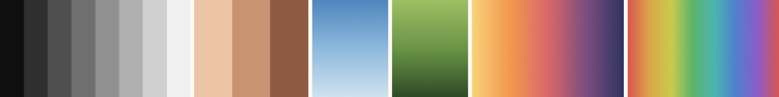
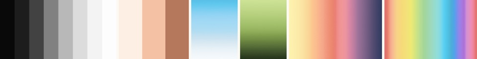
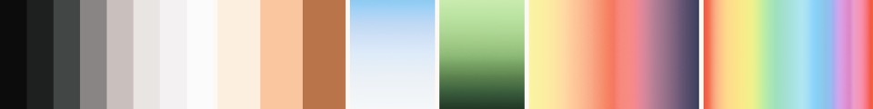
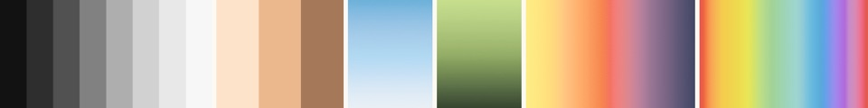
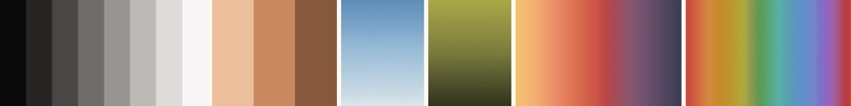
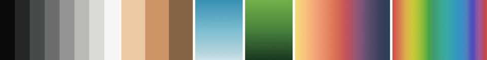
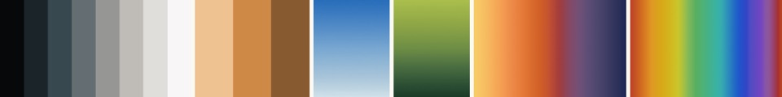

撮るだけで、投稿できるVlogに。
撮った順のまま、
App Storeで近日公開iPhone（iOS 26以上）本体無料
撮るのは好きなのに、編集で止まる。
- 並べる、切る、色、文字、音楽、書き出し。毎回ぜんぶを決めるのは、しんどい。
- 何でもできるアプリほど、何もしないまま閉じてしまう。
- 撮りためた日々が、形にならないまま、フォルダの中で眠っていく。
トルットは、撮ることと、一本に仕上げることを、
撮る、ととのう、完成。
- 撮る
- 話すところは止めるまで、景色や手元は3・5・10秒で自動で止まります。写真アプリの動画も取り込めます。
- ととのう
- 撮った順のまま、色と文字と音が重なります。アプリが勝手に並べ替えることも、元の素材を書き換えることもありません。
- 完成
- はじまりと終わり、タイトルとサムネイルまで、横16:9の一本に。写真アプリへ保存したり、共有したりできます。
- 仮
ここに撮影の画面が入ります
iPhoneの縦の画面写真
screen-capture.png
- 仮
ここにVlogの一覧が入ります
iPhoneの縦の画面写真
screen-list.png
- 仮
ここに完成の画面が入ります
iPhoneの縦の画面写真
screen-finish.png
完成した、一本。
日付とコメント、話した声の字幕まで入った、TORUTTOで仕上げたVlogの一部です。
ここにTORUTTOで仕上げたVlogの一部が入ります
日付・コメント・字幕が入ったところを20〜30秒。横16:9（作例1）
finished-vlog.mp4
選ぶのは、雰囲気と色だけ。
雰囲気は、日常・やわらか・シネマの3つ。1つ選ぶと、仕上がりの項目が一度にそろいます。迷うところは、先に決めておきました。
色は、色づくりの専用の道具で一から作った6つと標準。Apple Logで撮った素材も、見やすい色に仕上げます。強さと粒も選べます。
ここにLogのまま撮った映像が入ります
Apple Logで、色を焼かずに5〜10秒。横
log-before.mp4
ここに同じ映像に色「記録」を当てたものが入ります
Logの映像があれば、アプリと同じ表を当ててこちらで作れます
log-after.mp4

標準見たままに近い、素直な色

記録渋く硬めの、ドキュメンタリーの色

街角少し懐かしい、ネガフィルムのような色

静寂淡くやわらかい、落ち着いた色

大地土のような、温かい色

新緑緑が深く、しっとりした色

夕映青と橙がくっきり分かれる、映画のような色
あなたの日々は、iPhoneの中に。
撮った動画も声も、iPhoneの外へは送りません。字幕の文字起こしも、顔を隠すための解析も、iPhoneの中で行います。
アカウント登録はありません。広告も、利用状況を追いかける仕組みも入っていません。
ここにiPhoneの中で処理している画面が入ります
字幕か、顔を隠すの画面など。縦の画面写真
screen-privacy.png
できること
- ほかのカメラの動画も
- 写真アプリから取り込めます。色を決めた素材は、その色のまま。
- あとから声を足す
- 仕上がりを見ながら、ナレーションを録って重ねられます。
- 字幕が自動でつく
- iPhoneの中で声を文字にします。まちがいは直せます。
- 話すとBGMが下がる
- 話しているところは、音楽が自動で小さくなります。
- 飛び飛びの日も一本に
- 旅行の数日も、春から秋までも。日付の区切りも入れられます。
- タイトルとサムネイル
- 一本と一緒にできます。サムネイルは4つのかたちから。
- Apple Logで撮れる
- 対応するiPhone（Proモデル）で。専用の色の表で仕上げます。
- 映った顔を隠す
- iPhoneの中で見つけてぼかします。手で範囲を足すことも。
- すぐ撮れる
- ウィジェットやコントロールセンターから始められます。
- 完成を待たなくていい
- ほかのアプリへ移っても続き、終わるとお知らせします。
無料で、ちゃんと一本。
撮影から完成まで、無料のままで全部できます。1080p・10分までの一本に、ロゴは入りません。月額の支払いもありません。
無料
- 撮影から完成まで、全部の流れ
- 1080p・10分までの一本
- 内蔵の色6つと標準、BGM 14曲
- 完成動画にロゴは入りません
よくある質問
- 無料でどこまでできますか？
- 撮るところから一本を完成させるまで、全部の流れを無料で使えます。完成した動画は横16:9、1080p、10分までで、透かし（ロゴ）は入りません。内蔵のBGM 14曲、内蔵の色6つ（記録・街角・静寂・大地・新緑・夕映）と標準、雰囲気3つ（日常・やわらか・シネマ）、字幕、顔を隠す機能、あとから声を足す機能、まとめVlogも無料です。 続きを読む（無料でどこまでできますか？）
- 撮った動画はiPhoneの外へ送られますか？
- 送られません。撮った動画、声、コメント、字幕は、あなたのiPhoneの中だけで扱います。運営者のサーバーも、外部のAIサービスも使っていません。広告や、利用状況を追いかける仕組みもありません。 続きを読む（撮った動画はiPhoneの外へ送られますか？）
- TORUTTO+は買い切りですか？
- はい、買い切りです。一度買えば、月ごと・年ごとの支払いはありません。値段は、App Storeの購入画面に表示される価格です。TORUTTO+で増えるのは、4Kでの完成、10分より長い一本、自分のLUT（.cube）の読み込み、自分の曲の読み込みの4つです。 続きを読む（TORUTTO+は買い切りですか？）
App Storeで近日公開
iPhone（iOS 26以上）本体無料
撮ると、一本になる。